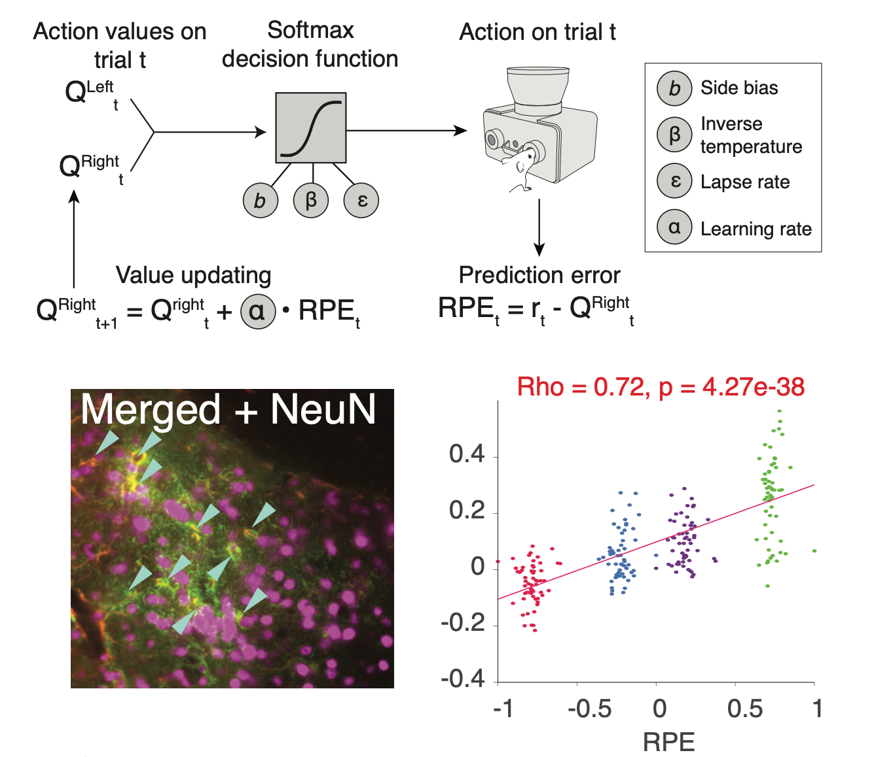

Mechanisms of Cognition and Its Disorders Under Uncertainty
How does the brain combine reward, uncertainty, information, and time into a single risk-sensitive decision and action, and how does it learn from the outcome? How do we generate actions and adapt to errors coming from either ourselves or explicitly from the noisy and/or volatile world?
Read moreWe record from and perturb circuits in animals and construct detailed models of behavior to identify the computations that drive it. Through computational psychiatry, we apply the same models to human behavior to ask where these computations go wrong in disorders of mood and cognition such as OCD.
This work extends beyond neurons, including the role of astrocytes in learning from reward prediction errors.